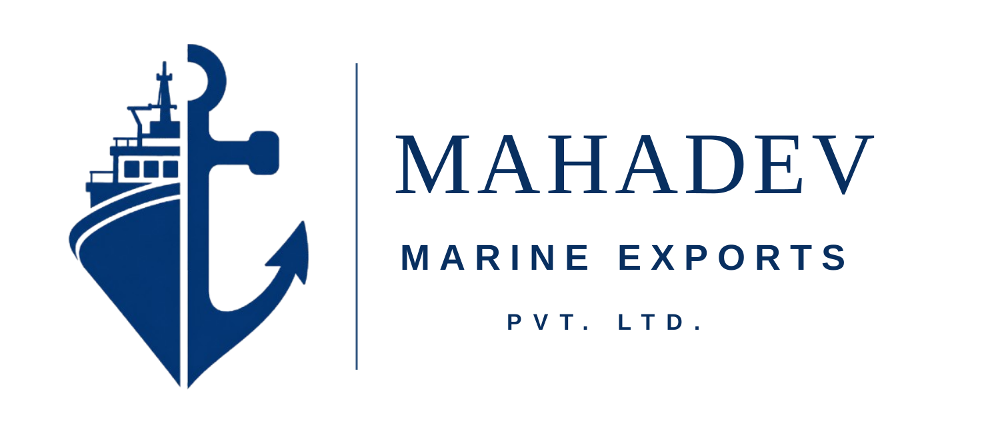

Sourcing & Processor Identification
Identify suitable Indian processors based on species, product form, capacity, certification and destination-market requirements.
Mahadev Marine Exports connects international buyers with suitable Indian seafood processing facilities while coordinating procurement, quality, packaging, export documentation, reefer logistics and shipment execution.

One professional coordination point between international seafood buyers and suitable Indian processing facilities.
Successful seafood procurement requires consistency, technical knowledge, reliable communication and confidence that every shipment will meet the buyer’s agreed specification.
Mahadev Marine Exports helps overseas importers simplify their purchasing process by identifying suitable processors, coordinating commercial discussions, monitoring production and quality, and supporting export documentation and logistics.
Our objective is to reduce sourcing risk and help buyers secure reliable Vannamei Shrimp, Black Tiger Shrimp, value-added shrimp and frozen seafood programs from India.
Read our complete company profileMahadev Marine provides one coordinated interface for sourcing, processor communication, production, quality, documentation and logistics.
Identify suitable Indian processors based on species, product form, capacity, certification and destination-market requirements.
Coordinate quotations, negotiations, raw-material availability, production planning and commercial timelines.
Act as the buyer’s local coordination point for processor communication, specifications, packaging and shipment follow-up.
Coordinate production monitoring, specification compliance, quality inspections, packaging verification and shipment readiness.
Coordinate commercial invoices, packing lists, certificates, shipping documentation, customs documentation and buyer-required files.
Coordinate reefer container planning, shipping schedules, document follow-up and cargo departure monitoring.
Procurement, quality and documentation expertise coordinated through one buyer-facing company.
Combined experience in seafood raw-material sourcing, processor coordination, quotations and supply planning.
Combined experience in processing operations, production monitoring, specifications and final packing verification.
Combined experience coordinating shipment documents, certificates, customs files and buyer-required documentation.
Associated buyers can receive controlled updates covering agreed production and quality milestones, from raw-material intake and processing to packing, final QC, documentation and shipment readiness.
Mahadev Marine Exports remains the buyer-facing coordination and quality-assurance contact for the agreed specification, subject to the commercial agreement and applicable destination requirements.
Requirements, processor matching, commercial coordination, quality and shipment are managed as one connected procurement program.
Species, form, count, glaze, pack, certifications and destination.
Suitable capacity and production capability identified.
Commercial terms, production plan and schedule coordinated.
Production and specification compliance monitored.
Documentation, reefer planning and shipment follow-up.
Our primary positioning is seafood sourcing and buyer representation, supported by seafood, agro and shrimp byproduct export divisions.

Vannamei, Black Tiger, value-added shrimp, fish fillets, tuna and buyer-specific frozen seafood formats.

Export-oriented agro commodities with bulk and buyer-specific commercial coordination.

Industrial-value shrimp byproduct coordinated for ingredient and industrial buyers.
Products may be processed through facilities supported by applicable approvals and food-safety systems, subject to certificate scope, product and destination-market requirements.
 EU Approved
EU Approved GACC Approval
GACC Approval US FDA Registration
US FDA Registration BRCGS Food Safety
BRCGS Food Safety HACCP
HACCP ISO 22000
ISO 22000 ASC Programmes
ASC Programmes Export House Status
Export House StatusMahadev Marine coordinates sourcing and procurement programs for buyers across Europe, the Middle East, Southeast Asia, East Asia, North America, Australia and other markets.
Global sourcing, buyer communication and procurement coordination led through a single accountable contact.
Key information for buyers evaluating Mahadev Marine as a sourcing, procurement and buyer representation partner in India.
Mahadev Marine provides seafood sourcing, procurement management, buyer representation in India, processor identification, supplier evaluation, production and quality coordination, export documentation, reefer logistics and shipment monitoring.
Mahadev Marine coordinates buyer requirements through suitable seafood processing facilities. Facility selection, certification scope and production capability are matched to the buyer’s product and destination-market requirements.
Yes. Associated buyers can receive controlled production and quality updates specific to their own commercial order, subject to the agreed program.
Programs can include Vannamei Shrimp, Black Tiger Shrimp, HOSO, HLSO, EZ Peel, PD, PDTO, PUD, butterfly shrimp, cooked shrimp, shrimp skewers, frozen fish fillets and Yellowfin tuna loins.
Mahadev Marine acts as the buyer-facing coordination contact for the agreed specification, quality checks, packaging, export documentation and shipment execution, subject to the commercial agreement.
Send your target species, product form, size, glaze, pack, certification, quantity, destination and commercial requirement for processor matching and procurement review.
Let us build a reliable and long-term seafood procurement partnership.